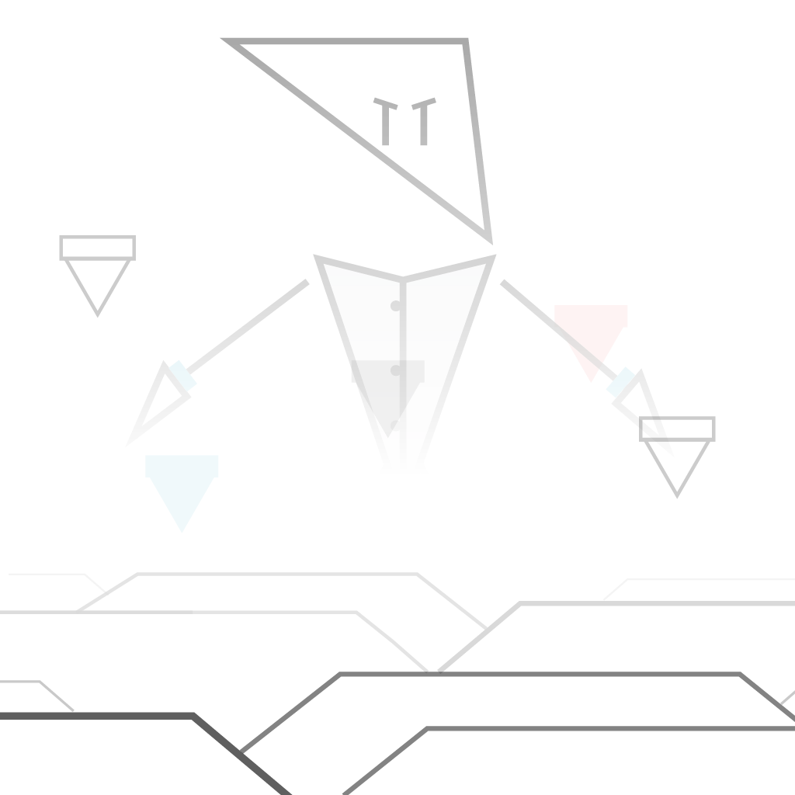
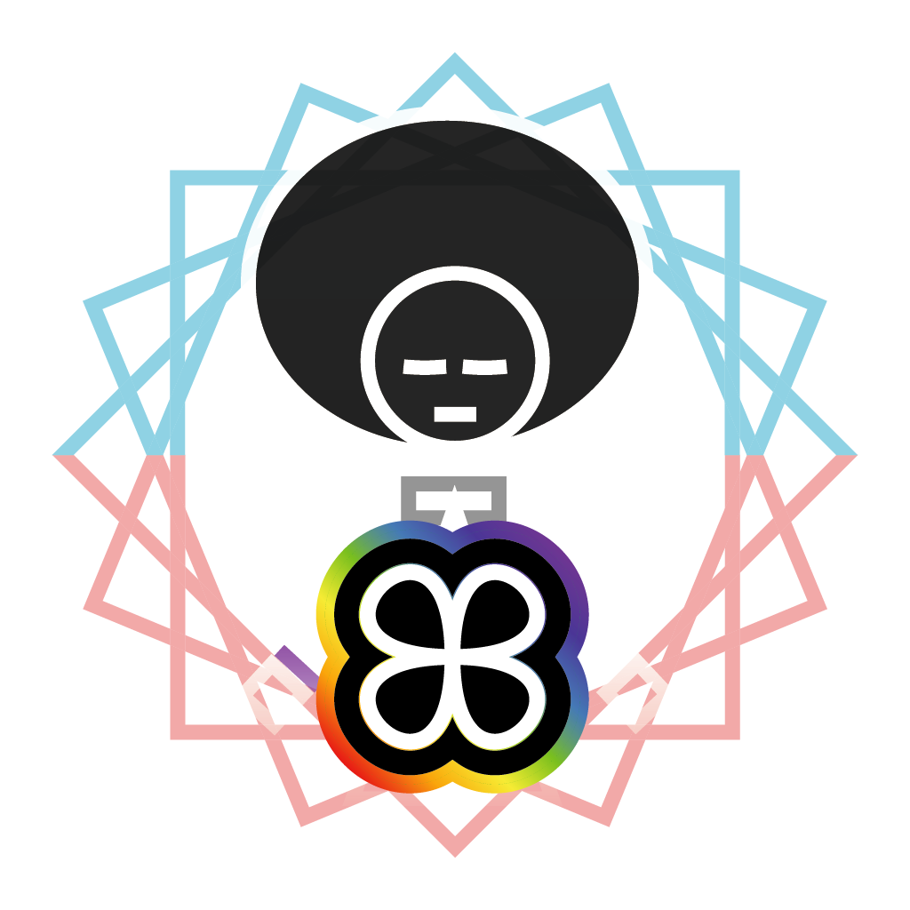
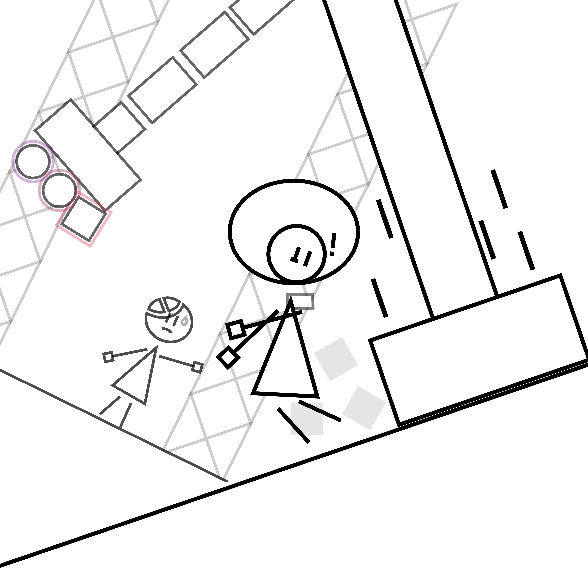

>>> An Unknown Dimension

It was a normal and sunny summer day in the town of Aquarel... until an extra-dimensional being by the name of Vexer arrived on Earth and sent it into chaos, creating portals to other dimensions in the process.
Mono Blackray happens to be in the right place at the wrong time, and ends up in the mono-chromatic geometrical dimension of Corollorum.
>>> The Heart of Corollorum

The mythical and ancient
Heart of Corollorum, an entity capable of modifying the dimension, was stolen long ago.
Whoever absorbs it becomes a color-shifter, guardian of the dimension and someone who can change the colors and properties of it at will. There has been no color-shifter in centuries, and Mono is destined to become the next one.
>>> Mysterious Environments

Leaving the dimension requires a color-shifter with a complete and charged Heart of Corollorum, however it has been split into 3 pieces by whomever stole it. The dimension is big and diverse, with various structures and biomes taken from foreign dimensions. Will Mono and his new friends make it out of the dimension in one piece?
Game Information
Mono-Space is a 2D platformer that focuses on physics and platforming challenges utilizing the mechanic of "color-shifting", where you change the colors of the dimension to make layers of the dimension appear and dissapear. Alongside the color-shifting mechanic, you also get a magnetic bracelet named the Hyperllorum Bracelet, which allows you to interact with the environment using magnetism.